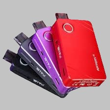

VAPOX
VAPOX
Los AIO son muy parecidos a los pods pequeños con una batería interna que parte con 1500mha lo cual hace que nos dure aproximadamente unas 12 Horas este aparato es muy extraño ya que puede ocupar sales de nicotina tanto como Esencias por lo cual lo llaman hibrido generalmente a estos no se les puede regular el watage o voltaje pero hay versiones a las cuales si se les pueden regular, cuando se regula el watage o voltaje es por que se hace uso de esencias solo un loco lo haría con sales de nicotina ya que podría causar una fuerte sobredosis, este producto es muy bueno su eres de las personas que les gustaba fumar a una hora en específico o a la hora de programar o mientras bebes un café ya que son compactos y caben en tu bolsillo, estos productos ocupan una especie de claromizador ya que ocupan coils que se enroscan en un tanque de gran capacidad en ML lo cual lo hace muy practico, para estos dispositivos existe una coil muy peculiar ya que es parecido a un RDA muy pequeño con forma de coil.


Nombre:Martin Carrera Gonzales
Curso:4°I
Fecha:22 de mayo 2020
Profesora:Aída Días
Gmail: Martincarrera128@gmail.com
Creditos
Mono Vapeador
Santivape
Talca Vapea
Smok Chile
BLK Unicorn Chile
(Pagina creada en Chile VI región Doñigue comuna de Lo Miranda sector Plazuela)
Coctáctenos en: